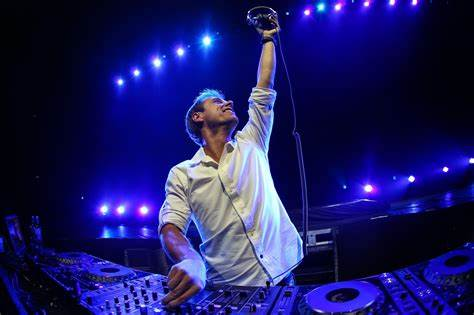

Nombre Artista Favorito:
DJ Armin Van Buuren

Biografia:
Nombre completo:Armin Jozef Jacobus Daniël van Buuren
Fecha de nacimiento:25 de diciembre de 1976
Lugar de nacimiento:Leiden, Países Bajos
Armin van Buuren es un reconocido DJ, productor de música electrónica y compositor de origen
neerlandés. Es ampliamente considerado como uno de los artistas más influyentes y exitosos en
la
escena de la música electrónica y trance a nivel mundial.
Armin comenzó su carrera en la música a una edad temprana y desarrolló un amor por la música
electrónica en la década de 1990. En 1995, comenzó a actuar como DJ en clubes locales y,
rápidamente, se hizo un nombre en la escena dance de los Países Bajos.
Algunos hitos clave en la carrera de Armin van Buuren incluyen:
- En el año 2001, lanzó su primer álbum de estudio, titulado "76".
- Fundó su propio sello discográfico llamado Armada Music en 2003, que se ha convertido en
una de las principales discográficas de música electrónica en el mundo.
- Su programa de radio semanal "A State of Trance" ha ganado una audiencia global masiva y
se ha convertido en uno de los programas de radio de música electrónica más populares.
- Ha sido galardonado con numerosos premios, incluyendo múltiples DJ Awards y ha sido nombrado
DJ número 1 del mundo en el ranking anual "Top 100 DJs" de DJ Mag en varias ocasiones.
- Armin van Buuren es conocido por su estilo musical diverso que abarca géneros como el trance,
el progressive house y la música trance vocal. Ha colaborado con numerosos artistas de
renombre y ha llevado su música a escenarios y festivales en todo el mundo.
Mis 3 albumes favoritos:
- Intense
- This Is What It Feels Like
- Waiting For The Night
- Alone
- Mirage
- Orbion
- Not Giving up On Love
- Coming Home
- Shivers
- Serenity
- Shivers
- Control Freak
Link de Spotify: